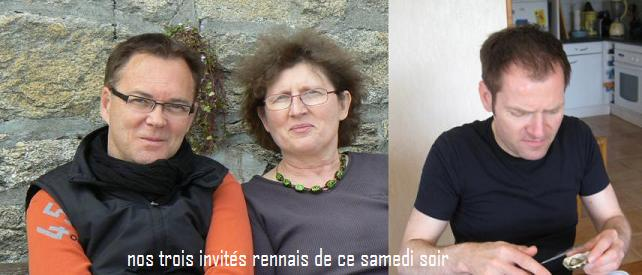

Recette n°218 : soupe de
champagne

Ingrédients : apéritif
pour 4 personnes
une bouteille de champagne ou d'un mousseux de bonne qualité
150 g de sucre en poudre
150 ml de Cointreau
le jus de 3 citrons
une dizaine de glaçons
Préparation :
1 - mettre le champagne au réfrigérateur plusieurs heures
à l'avance
2 - dans un saladier, mélanger sucre,Cointreau et jus de citron,
mettre le tout au réfrigérateur plusieurs heures aussi
3 - au moment de servir, verser la bouteille de champagne dans le
saladier, et y joindre les glaçons
4 - remuer à la cuiller légèrement et servir
à la louche
Observations :
Recette exécutée en le2 mai 2009 à Quiberon
pour Jean-Claude, Alain, Annie Lefoort, Michel et Andrée, nous
deux ; très apprécié avec des toasts de rillettes
de sardines (cf. recette n° 218).